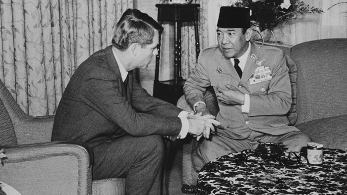

Demokrasi Parlementer (1945-1959)
Demokrasi parlementer dimulai ketika Indonesia sudah resmi menjadi negara dan merdeka hingga tahun 1959. Demokrasi parlementer artinya seluruh kekuasaan politik dipegang parlemen/badan legislatif yang dipilih rakyat. Contohnya kuasa pemerintahan dipegang Perdana Menteri. Dalam demokrasi parlementer, rakyat diberikan hak untuk memilih para anggota parlement melalui pemilihan umum, dan anggota parlemen yang terpilih akan terbentuk menjadi pemerintahan.

Ciri-ciri dari demokrasi parlementer :
Sistem demokrasi parlementer memiliki beberapa keunggulan yang strategis yaitu memperecpat pembuatan kebijakan karena adanya kesepakatan dan ketergantungan antara badan eksekutif dan legislatif. Lalu, tidak ada tumpang tindih dalam hal tanggung jawab, implementasi, dan pembuatan kebijakan. Terakhir, adanya kontrol yang ideal dari badan legislatif terhadap badan eksekutif.
Meskipun sistem demokrasi parlementer ini memiliki banyak keunggulan, sistem ini tidak luput dari kelemahan. Salah satu kelemahannya adalah tidak jelasnya waktu pelaksanaan pemilihan umum.Selanjurnya, terlalu bergantungnya badan eksekutif pada badan legislatif, sehingga pemerintah berpotensi dijatuhkan sewaktu-waktu. Pada saat yang sama, badan eksekutif juga dapat mengontrol badan legislatif sewaktu-waktu jika jumlah partai koalisi di parlemen lebih banyak.
Perjalanan Demokrasi Parlementer :
Perdana menteri yang memimpin kabinet harus bertanggung jawab kepada parlemen, yaitu Dewan Perwakilan Rakyat (DPR). Dampak dari itu adalah ada beberapa kabinet yang mendapatkan legitimasi pemerintahan selama 9 tahun, yaitu:
Kabinet ini dipimpin langsung oleh Mohammad Natsir sebagai perdana menteri. Natsir adalah seorang tokoh politik dari partai Masyumi, partai Islam terbesar pada waktu itu. Natsir menjabat dari tanggal 6 September 1950 sampai 21 Maret 1951.
Kabinet ini terbentuk dari aliansi politik antara partai Masyumi dan PNI. Dalam kabinet ini, Sukiman Wirjosandjojo menjabat sebagai pemimpin pemerintahan sedangkan Suwirjo sebagai wakil pemimpin pemerintahan. Kabinet ini beroperasi dari tanggal 27 April 2951 hingga 3 April 1952.